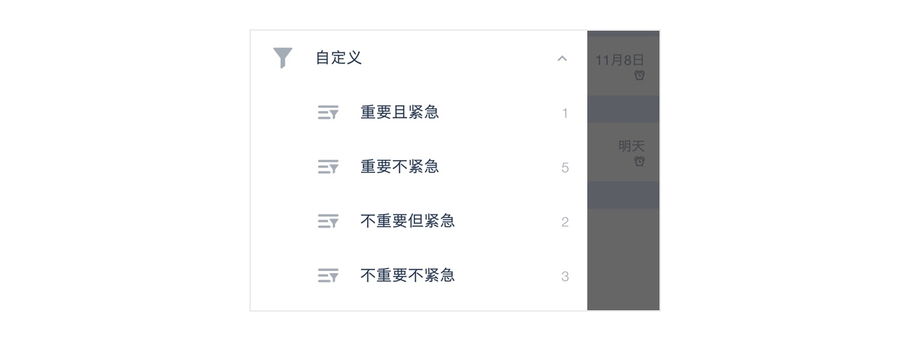

文章来自滴答清单帮助中心
四象限是一种常用的时间管理理论，它将需要处理的事按“重要”和“紧急”两个维度划分，并对应到四种待处理状态中，帮助你决定下一步应该做什么。

通常，你需要马上执行“急事”，确保它们不会延期，比如：
本周五前必须冻结项目到可发布状态
明天女友生日，所以今天要去买礼物
但长远来看，最好将重心放在“要事”上。想想看，需要马上执行的“急事”是否曾经也是“要事”？早点把“要事”消化掉就不会压力满满了。
不过在实际情况中，恼人的“烦事”会比预期多。这些突发事件本不在你的计划中，但又不得不尽快解决，比如：
小区门禁升级需要去物业更换房卡
亲朋好友突然造访，向你咨询些事情
因为迫切的呼声让你产生“这很重要”的错觉——实际上就算重要也是对别人而言。一旦进入忙碌的状态，你可能更想在结束后去打个游戏、看看综艺节目、约朋友聊个天放松放松......乍一想没什么不对是吧？忙碌之后确实需要缓缓，但是朋友，你还记得第一象限里的“要事”吗？
所以，减少在第三象限的忙碌，尽早处理第二象限的事情，合理分配时间，去做对你而言重要的事情，才是四象限理论的核心。
一、利用清单创建四象限系统
如果你的事情不太多，那么使用这种方式可以快速搭建起简易的四象限任务系统。你只需要做好以下四步，就能在滴答清单里实践四象限了：
创建四个清单，对应四个象限
将这四个清单放进同一个文件夹“四象限”
将收集箱的任务移动到对应清单
每天在“四象限”文件夹下查看并及时调整任务的状态
在处理收集箱前，先在侧边栏创建四个清单，分别和四个象限对应。然后为它们创建文件夹“四象限”。

注：长按清单A并拖放到清单B上即可为清单A和B创建文件夹。推荐给清单设置不同的颜色，更好的区分任务在哪个象限。
以后每天处理收集箱时，就可以将任务逐条移动到对应的清单内。
- 今天去给女友买生日礼物 → 重要且紧急
- 打电话给小文，帮忙购买《哈利波特 8》英文原版书 → 重要不紧急
- 明天下午2点去面试 → 重要且紧急
- 买回家的火车票 → 重要不紧急
- 帮赵星问推荐信的书写要求 → 不重要但紧急
- 预定纪念款球衣 → 不重要不紧急
在“四象限”文件夹的“所有任务”中，选择「按清单排序」，就能清晰的看到每个象限中都有什么事情。

注：当某件事情从某个象限转化到其他象限时，你可以直接在文件夹的“所有任务”中，长按这条任务，并拖动到对应的清单
注：如果需要提醒，记得给任务设置好日期和时间
接下来，就可以每天查看、处理并调整任务——做完的事情及时打勾，有变更的事情及时移动。

几天内的事情算紧急？什么状态的任务算重要？创建自定义智能清单时，记得给每个象限都设置好对应的筛选规则。例如，“重要且紧急”的筛选条件可以设置如下：
- 日期选中「今天」、「明天」
- 优先级选中「高优先级」、「中优先级」
自定义清单创建完，你的四象限系统框架就搭好了。以后处理收集箱时，除了移动到对应分类，也要记得给任务都设置好优先级和日期，如果一些不紧急的事情无法估计什么时候完成，可以只设置优先级。

注：任务前面的小方框，红色代表高优先级，黄色代表中优先级，蓝色代表低优先级，灰色代表无优先级。其中，红色和黄色都可以表示任务是重要的，蓝色和灰色则可以表示任务是不重要的。任务后面的日期，则代表了紧急程度。
- 今天去给女友买生日礼物 → 中优先级，今天下午5点
- 明天下午2点去面试 → 高优先级，明天下午2点
- 买回家的火车票 → 高优先级，没有日期
- 帮赵星问推荐信的书写要求 → 低优先级，明天
- 预定纪念款球衣 → 无优先级，下周三
设置优先级和日期时，你不需要去思考这些事属于哪个象限，只需要根据实际情况设置好即可，剩下的工作都交给自定义智能清单，它会帮你将符合条件的任务都筛选出来。

并且，你不用手动去调整任务的状态，如果一个重要不紧急的任务没有被及时处理，它会自动从重要不紧急转移到重要且紧急。不过，你应该不希望这事儿发生吧:)
以上两种方法都能帮助你在滴答里实践四象限系统，快来试试吧。别忘记四象限的核心：去做对你真正重要的事儿，合理分配你的时间。